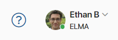
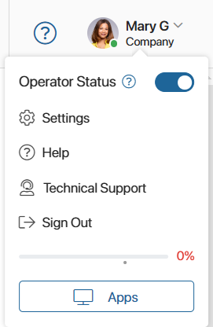
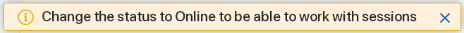
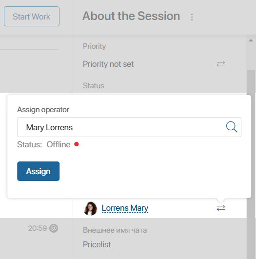

With the BRIX Service solution, operators and supervisors can set the working status. It affects the processing of messages in the Live Chats workspace.
The status is shown as a marker in the top right corner of any page in the system for all users who are in the operators or supervisors group.

If the marker is green, the operator’s status is Online. With this status, different functions become available to users depending on their role:
- Live chat operators can:
- Start working on sessions from the common queue and create new sessions.
- Communicate with a user on a session page.
- Manage sessions: reassign them, change their name and priority, mark them as spam, start business processes, assign them to the bot, link them with app items, or lock customer accounts.
- Close sessions.
- Be automatically assigned to a new session if routing rules provide it.
- Live chat supervisors can:
- Assign messages to groups of operators or assign them to specific employees.
- Manage sessions: reassign them, change the name and priority, mark them as spam, start business processes, and assign them to the bot.
начало внимание
In system versions 2024.4 and below, statuses are provided only for operators. Supervisors always have access to all of their authorized actions.
конец внимание
If the marker is red, the operator is Offline. This status can be set manually by an employee or assigned automatically if the user is inactive for a period of time set by the administrator.
An operator or supervisor with this status can only view sessions. It is impossible to create a session, start replying to messages in sessions or manage them. If, according to a routing rule, a new session is supposed to be assigned to an operator who is Offline, the rule is not applied. The next routing rule in the list is used instead. A system administrator can also prohibit assigning sessions manually to operators who are Offline.
Change the status
To change the status, on any page in the system click your name in the upper right corner. In the menu that opens, use the switch next to the Operator Status parameter.

If your status is Offline, you will see the following message when opening pages and apps of the Live Chats workspace:

See the status of another user
Supervisors and operators can check the statuses of other operators when reassigning a session. To do this, on the session page in the right pane of the chat window in the Operator field, click on the icon. After selecting an operator, you will see their status.

To allow users to track the statuses of all operators and supervisors, the system administrator can create a widget to display the statuses using TS SDK methods. Such a widget can be placed, for example, on a custom page added to the Live Chat workspace.